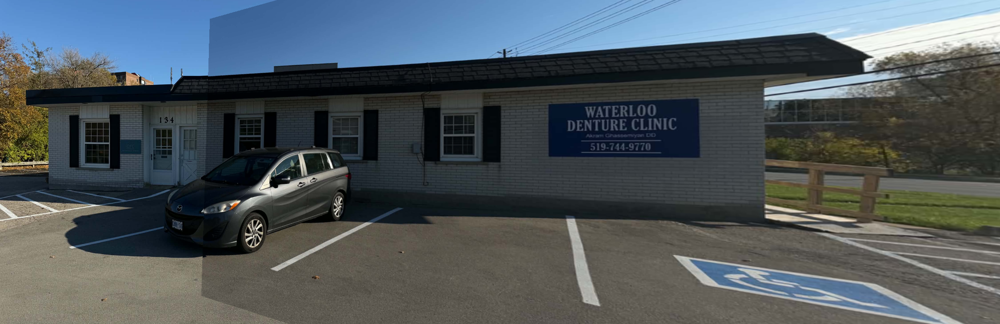
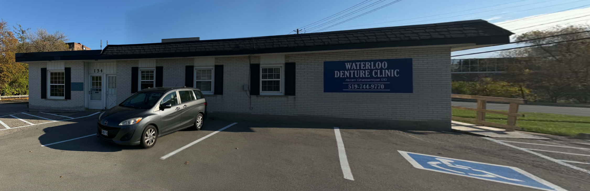
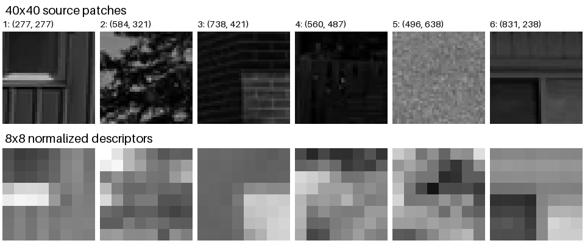
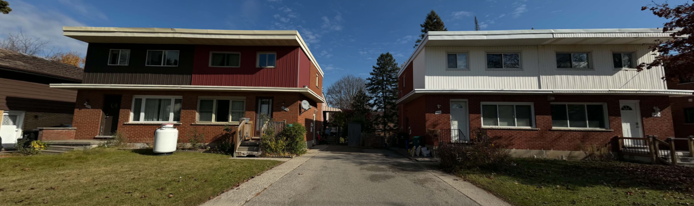

Part A: Image Warping and Mosaicing
A.1: Shoot the Pictures
Set 1: Dental Clinic
Two photos of a dental clinic and its parking lot.
Set 2: Houses
Three photos of neighboring semi-detached houses and their shared driveway.
A.2: Recover Homographies
Twelve corresponding points were manually selected in the clinic images. Matching numbers mark the same landmark in both views. Coordinates use the original 2048×1536 images, with (0, 0) at the top-left and x increasing to the right.
Solving for H
Each correspondence supplies two constraints on the homography. Using more than four pairs gives an overdetermined system, so least-squares fitting can reduce sensitivity to point-selection errors. With h33 = 1, the projective coordinates are:
\[
u = \frac{h_{11}x+h_{12}y+h_{13}}{h_{31}x+h_{32}y+1},\qquad
v = \frac{h_{21}x+h_{22}y+h_{23}}{h_{31}x+h_{32}y+1}.
\]
Multiplying by the denominator and collecting the eight unknown entries of H gives:
\[
\begin{bmatrix}
x & y & 1 & 0 & 0 & 0 & -ux & -uy \\
0 & 0 & 0 & x & y & 1 & -vx & -vy
\end{bmatrix}
\begin{bmatrix}h_{11}\\h_{12}\\h_{13}\\h_{21}\\h_{22}\\h_{23}\\h_{31}\\h_{32}\end{bmatrix}
= \begin{bmatrix}u\\v\end{bmatrix}.
\]
- Normalize: Center each point set and scale its mean distance from the origin to √2. This keeps the coordinate magnitudes comparable and improves numerical conditioning.
- Solve: Stack the two equations from each pair into a 24×8 system and solve with
np.linalg.lstsq.
- Recover pixel coordinates: Undo the coordinate normalization and scale the resulting matrix so h33 = 1.
Recovered Homography
This matrix maps Image 1 to Image 2, using \((u, v, 1)^T \sim H(x, y, 1)^T\).
The reprojection RMSE over the selected points is pixels in Image 2.
A.3: Warp the Images
For rectification, the four selected object corners are mapped to the corners of an output rectangle using computeH. Inverse warping then visits every output pixel, avoiding holes caused by projecting source pixels forward.
Apply H−1 to each output coordinate and divide by its homogeneous coordinate to obtain the source position. The position usually falls between pixels, so its intensity is sampled using one of two methods:
- Nearest neighbor: Round the source coordinates and copy that pixel.
- Bilinear: Take the four surrounding pixels and weight them by their horizontal and vertical distances.
With fractional offsets a and b from the upper-left neighbor, bilinear interpolation computes:
(1-a)(1-b) I[y0, x0] + a(1-b) I[y0, x1]
+ (1-a)b I[y1, x0] + ab I[y1, x1]
A validity mask marks output pixels whose source positions lie inside the image. Integer coordinates refer to pixel centers.
Rectification 1: Arc Therapeutics Sign
The four marked sign corners are mapped to a 600×600 square.
Rectification 2: House Window
The four outer glass corners of the three-panel window are mapped to a 900×600 rectangle.
Interpolation Comparison

Nearest Neighbor: 4× Detail
Nearest neighbor produces blocky steps around the letters and window frame. Bilinear interpolation smooths those transitions, giving softer edges. Nearest neighbor is faster because each output pixel uses one sample; bilinear combines four.
Median runtime over runs after a warm-up, including inverse mapping and interpolation:
A.4: Blend the Images into a Mosaic
The two clinic photos from A.1 are reduced to 1024×768 with Lanczos resampling to limit aliasing. Image 1 is the reference; the inverse of the A.2 homography maps Image 2 into its coordinates, with the matrix adjusted for the resized inputs.
- Set the canvas: Transform each image's four corners and take the combined bounding box. Its minimum coordinates give the canvas origin.
- Warp images and weights: Assign weights proportional to distance from the nearest source border, then warp colors and weights onto the canvas with bilinear interpolation. Larger interior weights make the transition between images gradual.
- Blend: Sum the weighted colors and divide by the total weight at each covered pixel. Validity masks exclude empty warp regions from the blend.
mosaic = (weight1 * image1 + weight2 * image2) / (weight1 + weight2)

Direct Overlay
Image 2 overwrites Image 1 in the overlap.

Feathered Mosaic
Cropped view. Click for the full canvas.
Feathering makes the brightness transition across the sky and facade more gradual. Some doubled edges are visible around the car in the overlap.
Part B: Feature Matching for Autostitching
B.1: Harris Corner Detection
The three house photos are reduced to 1024×768 with Lanczos resampling and converted to grayscale. Harris detects locations with strong intensity changes in two directions, making corners useful landmarks for matching. The supplied get_harris_corners function finds local response maxima at σ = 1. A 20-pixel boundary margin leaves room for the descriptor windows in B.2.
Adaptive non-maximal suppression (ANMS) selects strong corners with spatial coverage across the image, following Brown et al., Section 3:
- Find stronger neighbors: For each corner i, consider corners j satisfying
strength[i] < 0.9 * strength[j].
- Measure separation: Set the suppression radius to the distance to the nearest qualifying neighbor. Corners with no qualifying neighbor receive an infinite radius.
- Select: Keep the 500 largest radii. This favors corners that are strong relative to their surroundings and reduces clustering in textured areas.
Image 1
Image 2
Image 3
B.2: Feature Descriptor Extraction
- Extract context: Take an axis-aligned 40×40 grayscale window around each selected corner.
- Blur and sample: Apply a Gaussian with σ = 2, reflecting at the window boundaries, then sample every fifth pixel to form an 8×8 patch. Smoothing before subsampling reduces aliasing and makes the descriptor less sensitive to small corner-location errors.
- Normalize: Subtract the patch mean to remove brightness offset and divide by its standard deviation to normalize contrast. Flatten the result into a 64-value descriptor.
descriptor = (patch_8x8 - patch_8x8.mean()) / patch_8x8.std()
Each image produces 500 descriptors. Six examples from Image 2 are shown below.

Source Patches and Descriptors
Normalized values use a shared grayscale range of −3 to 3.
B.3: Feature Matching
Repeated patterns can produce several similarly close matches. The nearest-neighbor ratio test measures how clearly the best match stands out from its alternative, using Brown et al., Figure 6b.
- Compare: For each descriptor, calculate the sum of squared differences (SSD) to every descriptor in the next image and find the closest two.
- Filter: Keep the closest match when its SSD is less than half the second-closest SSD. This retains distinctive matches and rejects ambiguous alternatives.
SSD = sum((descriptor1 - descriptor2)**2)
accept = nearest_SSD / second_nearest_SSD < 0.5
B.4: RANSAC for Robust Homography
Incorrect matches can strongly distort a least-squares homography. RANSAC searches for a model supported by a geometrically consistent set of matches. Four pairs supply the minimum eight constraints needed to estimate H.
- Sample: Randomly choose four matching pairs and estimate a homography with
computeH. Collinear samples are discarded.
- Score: Transform all matched points and count inliers with a reprojection error below 3 pixels. Keep the model with the most inliers, breaking ties by median error.
- Repeat: Sample with a fixed random seed and use the best inlier fraction to estimate the trials needed for a 99.9% chance of drawing four inliers, with a maximum of 5,000 trials.
- Refine: Refit the homography using the inliers, then update the consensus from the new reprojection errors. Repeat until the inlier set stabilizes or ten refits are reached.
Manual and Automatic Stitching
The manual mosaic uses hand-selected correspondences, and the automatic mosaic uses the RANSAC estimates. Both use Image 2 as the reference, bilinear interpolation, and the feathered blending from A.4. The comparison shows the same crop in reference-image coordinates.
For the automatic mosaic, H12 maps Image 1 to Image 2. Image 2 uses the identity transform, and H23−1 maps Image 3 back to Image 2. The three warped images are blended on one canvas.
The RANSAC inliers span the rooflines, windows, and driveway, giving consistent alignment across both houses. The automatic mosaic keeps the window frames and roof edges continuous through the overlaps.
Three-Image Automatic Mosaic

Automatic House Mosaic
Cropped view. Click for the full canvas.